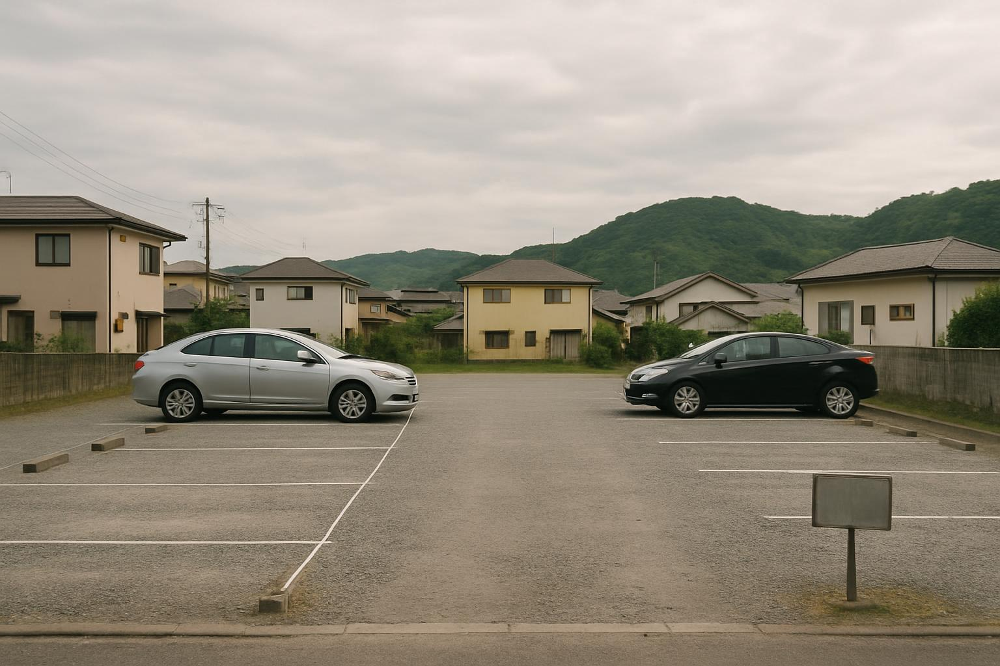

建物の活用が難しい立地でも、土地として貸し出す方法があります
「売るには惜しいけれど、住む予定も貸す当てもない」。そんな空き家では、建物を解体し、土地として活用するという選択肢があります。なかでも駐車場やトランクルームは、賃貸やリノベーションに比べて初期費用が軽く、鹿児島の郊外でも一定の需要が見込めます。
この記事では、駐車場・トランクルーム活用の方式ごとの違い、収益の目安、そして見落とされがちな固定資産税の注意点を整理します。
建物が使えなくても「土地」で活かせる
駅から遠い、築年数が古い、傷みが激しく賃貸に回せない――こうした空き家でも、土地としてなら需要があるケースは少なくありません。月極駐車場、資材置き場、屋外型トランクルームなどは、建物の価値に頼らずに収益化できる方法です。
判断の出発点は、解体にかかる費用と、活用で見込める年間収入のバランスです。解体費の相場は別コラム「鹿児島の空き家解体費用はいくら？相場と補助金を解説」で解説していますので、あわせてご確認ください。
駐車場活用の主な方式
| 方式 | 特徴 |
|---|---|
| 月極駐車場（自己運営） | 初期費用が軽く、砂利敷き・ロープ・車止め・看板で始められる。募集と契約管理は自分または地元の不動産会社に依頼 |
| 月極（一括借上げ） | 管理会社が土地ごと借り上げて運営。空きがあっても地代が入るぶん手間は少ないが、収入は控えめ |
| コインパーキング（一括借上げ） | 専門事業者が精算機などを設置・運営。立地次第で収益は大きいが、交通量の少ない郊外では設置対象にならないことも |
収益はあくまで目安ですが、1台あたり月3,000〜8,000円程度が一つの幅で、鹿児島市の中心部と、薩摩川内市・霧島市・姶良市などの郊外エリアでは相場に大きな差があります。まずは近隣の月極駐車場の空き状況と相場を調べると、需要の見当がつきます。
トランクルーム・資材置き場という選択
屋外にコンテナを置く「屋外型トランクルーム」や、事業者向けの資材・車両置き場としての貸地も、活用の候補です。需要は幹線道路沿いや、事業所の多いエリアで見込みやすくなります。
ただし、コンテナは設置場所によって建築基準法上の扱いや用途地域の制限がかかることがあります。設置前に市の窓口や事業者に確認しておきましょう。
更地にすると固定資産税が上がる点に注意
建物を解体して更地にすると、住宅用地の特例（住宅1戸あたり200平方メートルまで固定資産税の課税標準が6分の1になる等）が外れ、土地の固定資産税・都市計画税が上がります。詳しくは「空き家を放置すると固定資産税が6倍になるリスクを解説」で扱っています。
また、駐車場やトランクルームの収入は不動産所得（または事業所得）として確定申告が必要になる場合があります。規模が小さくても、収支の記録は最初から残しておきましょう。
始めるまでの流れ
- 現地調査（接道状況・地形・近隣の駐車場需要と相場を確認）
- 解体の見積もりを複数社から取得
- 活用方式を比較（自己運営／一括借上げ／コインパーキング）
- 整地・区画割り・車止め・看板の設置
- 募集・契約（自主管理か、地元の不動産会社に委託か）
TAMARIEでは、解体を前提とした現地調査から、売却・管理委託・土地活用のどれが向いているかの比較検討まで、鹿児島の相場を踏まえてご相談を承っています。